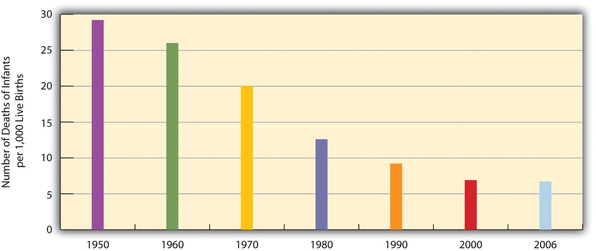

When we examine health and illness in the United States, there is both good news and bad news. The good news is considerable. Health has improved steadily over the last century, thanks in large part to better public sanitation and the discovery of antibiotics. Illnesses and diseases such as pneumonia and polio that used to kill or debilitate people are either unknown today or treatable by modern drugs. Other medical discoveries and advances have also reduced the extent and seriousness of major illnesses, including many types of cancer, and have prolonged our lives. The mortality rate from heart disease is down 50% from the early 1980s, and the mortality rate from strokes is down about 51% (Centers for Disease Control and Prevention, 2010).Centers for Disease Control and Prevention. (2010). Mortality by underlying and multiple cause, ages 18+: US, 1981–2006. Retrieved from http://205.207.175.93/HDI/TableViewer/summary.aspx?ReportId=166
As a result of all of these factors, the U.S. average life expectancy climbed from about 47 years in 1900 to about 78 years in 2010 (recall Figure 9.7 "Average Life Expectancy Across the Globe (Years)"). Similarly, infant mortality dropped dramatically in the last half-century from 29.2 infant deaths per 1,000 live births in 1950 to only 6.7 in 2006 (see Figure 18.4 "Infant Deaths per 1,000 Live Births, United States, 1950–2006"). Public health campaigns have increased awareness of the sources and seriousness of some health problems and led to behavioral changes and, for some problems, legislation that has reduced these problems. For example, cigarette smoking declined from 51% for males and 34% for females in 1965 to 22% and 17.5%, respectively, in 2007 (National Center for Health Statistics, 2009).National Center for Health Statistics. (2009). Health, United States, 2009. Hyattsville, MD: Centers for Disease Control and Prevention. In another area, various policies during the past three decades have dramatically reduced levels of lead in young children’s blood; 88% had unsafe levels in the mid-1970s, compared to less than 2% today (Centers for Disease Control and Prevention, 2007).Centers for Disease Control and Prevention. (2007). Interpreting and managing blood lead levels <10 μg/dL in children and reducing childhood exposures to lead: Recommendations of CDC’s advisory committee on childhood lead poisoning prevention. MMWR (Morbidity and Mortality Weekly Report), 56(RR-8), 1–16.
Figure 18.4 Infant Deaths per 1,000 Live Births, United States, 1950–2006
Source: Data from National Center for Health Statistics. (2009). Health, United States, 2009. Hyattsville, MD: Centers for Disease Control and Prevention.
Unfortunately, the bad news is also considerable. While the United States has improved its health in many ways, it nonetheless lags behind most other wealthy nations in several health indicators, as we have seen, even though it is the wealthiest nation in the world. Moreover, about 15% of U.S. households and more than 32 million persons are “food-insecure” (lacking sufficient money for adequate food and nutrition) at least part of the year; more than one-fifth of all children live in such households (Nord, Andrews, & Carlson, 2009).Nord, M., Andrews, M., & Carlson, S. (2009). Household food security in the United States, 2008. Washington, DC: U.S. Department of Agriculture. More than 8% of all infants are born at low birth weight (under 5.5 pounds), putting them at risk for long-term health problems; this figure has risen steadily for a number of years and is higher than the 1970 rate (National Center for Health Statistics, 2009).National Center for Health Statistics. (2009). Health, United States, 2009. Hyattsville, MD: Centers for Disease Control and Prevention. In other areas, childhood rates of obesity, asthma, and some other chronic conditions are on the rise, with about one-third of children considered obese or overweight (Van Cleave, Gortmaker, & Perrin, 2010).Van Cleave, J., Gortmaker, S. L., & Perrin, J. M. (2010). Dynamics of obesity and chronic health conditions among children and youth. JAMA, 303(7), 623–630. Clearly the United States still has a long way to go in improving the nation’s health.
There is also bad news in the social distribution of health. Health problems in the United States are more often found among the poor, among people from certain racial and ethnic backgrounds, and, depending on the problem, among women or men. Social epidemiologyThe study of how health and illness vary by social and demographic characteristics such as social class, race and ethnicity, and gender. refers to the study of how health and illness vary by sociodemographic characteristics. When we examine social epidemiology in the United States, we see that the distribution of health and illness depends heavily on our social location in society. In this way, health and illness both reflect and reinforce society’s social inequalities. The next section discusses some of the key findings on U.S. social epidemiology and the reasons for disparities they illustrate. We start with physical health and then discuss mental health.
Not only do the poor have less money, but they also have much worse health. There is growing recognition in the government and in medical and academic communities that social class makes a huge difference when it comes to health and illness. A recent summary of the evidence concluded that social class inequalities in health are “pervasive” in the United States and other nations across the world (Elo, 2009, p. 553).Elo, I. T. (2009). Social class differentials in health and mortality: Patterns and explanations in comparative perspective. Annual Review of Sociology, 35, 553–572.
Many types of health indicators illustrate the social class–health link in the United States. In an annual survey conducted by the government, people are asked to indicate the quality of their health. As Figure 18.5 "Family Income and Self-Reported Health (Percentage of People 18 or Over Saying Health Is Only Fair or Poor)" shows, poor people are much more likely than those with higher incomes to say their health is only fair or poor. These self-reports of health are subjective indicators, and it is possible that not everyone interprets “fair” or “poor” health in the same way. But objective indicators of actual health also indicate a strong social class–health link, with some of the most unsettling evidence involving children. As a recent report concluded,
The data illustrate a consistent and striking pattern of incremental improvements in health with increasing levels of family income and educational attainment: As family income and levels of education rise, health improves. In almost every state, shortfalls in health are greatest among children in the poorest or least educated households, but even middle-class children are less healthy than children with greater advantages. (Robert Wood Johnson Foundation, 2008, p. 2)Robert Wood Johnson Foundation. (2008). America’s health starts with healthy children: How do states compare? Princeton, NJ: Robert Wood Johnson Foundation.
For example, infant mortality is 86% higher among infants born to mothers without a high school degree than those with a college degree, and low birth weight is 29% higher. According to their parents, one-third of children in poor families are in less than very good health, compared to only 7% of children in wealthy families (at least 4 times the poverty level). In many other health indicators, as the news story that began this chapter indicated, children in low-income families are more likely than children in wealthier families to have various kinds of health problems, many of which endure into adolescence and adulthood.
Figure 18.5 Family Income and Self-Reported Health (Percentage of People 18 or Over Saying Health Is Only Fair or Poor)

Source: Data from National Center for Health Statistics. (2009). Health, United States, 2009. Hyattsville, MD: Centers for Disease Control and Prevention.
Poor adults are also at much greater risk for many health problems, including heart disease, diabetes, arthritis, and some types of cancer (National Center for Health Statistics, 2009).National Center for Health Statistics. (2009). Health, United States, 2009. Hyattsville, MD: Centers for Disease Control and Prevention. Rates of high blood pressure, serious heart conditions, and diabetes are at least twice as high for middle-aged adults with family incomes below the poverty level than for those with incomes at least twice the poverty level. All of these social class differences in health contribute to a striking difference in life expectancy, with the wealthiest Americans expected to live four and a half years longer on average than the poorest Americans (Pear, 2008).Pear, R. (2008, March 23). Gap in life expectancy widens for the nation. The New York Times. Retrieved from http://www.nytimes.com/2008/03/23/us/23health.html?scp= 1&sq=Gap%20in%20life%20expectancy%20widens%20for%20the%20nation&st=cse
Several reasons account for the social class–health link (Elo, 2009; Pampel, Krueger, & Denney, 2010).Elo, I. T. (2009). Social class differentials in health and mortality: Patterns and explanations in comparative perspective. Annual Review of Sociology, 35, 553–572; Pampel, F. C., Krueger, P. M., & Denney, J. T. (2010, June). Socioeconomic disparities in health behaviors. Annual Review of Sociology, 36, 349–370. doi:10.1146/annurev.soc.012809.102529 One reason is stress, which is higher for people with low incomes because of unemployment, problems in paying for the necessities of life, and a sense of little control over what happens to them. Stress in turn damages health because it impairs the immune system and other bodily processes (Lantz, House, Mero, & Williams, 2005).Lantz, P. M., House, J. S., Mero, R. P., & Williams, D. R. (2005). Stress, life events, and socioeconomic disparities in health: Results from the Americans’ Changing Lives Study. Journal of Health and Social Behavior, 3, 274–288. A second reason is that poor people live in conditions, including crowded, dilapidated housing with poor sanitation, that are bad for their health and especially that of their children (Stewart & Rhoden, 2006).Stewart, J., & Rhoden, M. (2006). Children, housing and health. International Journal of Sociology and Social Policy, 26, 7–8. Although these conditions have improved markedly in the United States over the last few decades, they continue for many of the poor.
Another reason is the lack of access to adequate health care. As is well known, many poor people lack medical insurance and in other respects have inadequate health care. These problems make it more likely they will become ill in the first place and more difficult for them to become well because they cannot afford to visit a physician or to receive other health care. Still, social class disparities in health exist even in countries that provide free national health care, a fact that underscores the importance of the other reasons discussed here for the social class–health link (Elo, 2009).Elo, I. T. (2009). Social class differentials in health and mortality: Patterns and explanations in comparative perspective. Annual Review of Sociology, 35, 553–572.
A fourth reason is a lack of education, which, in ways not yet well understood, leads poor people to be unaware of risk factors for health and to have a fatalistic attitude that promotes unhealthy behaviors and reluctance to heed medical advice (Elo, 2009).Elo, I. T. (2009). Social class differentials in health and mortality: Patterns and explanations in comparative perspective. Annual Review of Sociology, 35, 553–572. In one study of whether smokers quit smoking after a heart attack, only 10% of heart attack patients without a high school degree quit smoking, compared to almost 90% of those with a college degree (Wray, Herzog, Willis, & Wallace, 1998).Wray, L. A., Herzog, A. R., Willis, R. J., & Wallace, R. B. (1998). The impact of education and heart attack on smoking cessation among middle-aged adults. Journal of Health and Social Behavior, 39, 271–294.
A final and related reason for the poor health of poor people is unhealthy lifestyles, as just implied. Although it might sound like a stereotype, poor people are more likely to smoke, to eat high-fat food, to avoid exercise, to be overweight, and, more generally, not to do what they need to do (or to do what they should not be doing) to be healthy (Pampel, Krueger, & Denney, 2010; Cubbins & Buchanan, 2009).Pampel, F. C., Krueger, P. M., & Denney, J. T. (2010, June). Socioeconomic disparities in health behaviors. Annual Review of Sociology, 36, 349–370. doi:10.1146/annurev.soc.012809.102529; Cubbins, L. A., & Buchanan, T. (2009). Racial/ethnic disparities in health: The role of lifestyle, education, income, and wealth. Sociological Focus, 42(2), 172–191. Scholars continue to debate whether unhealthy lifestyles are more important in explaining poor people’s poor health than factors such as lack of access to health care, stress, and other negative aspects of the social and physical environments in which poor people live. Regardless of the proper mix of reasons, the fact remains that the poor have worse health.
In assessing the social class–health link, we have been assuming that poverty leads to poor health. Yet it is also possible that poor health leads to poverty or near-poverty because of high health-care expenses and decreased work hours. Recent evidence supports this causal linkage, as serious health problems in adulthood often do force people to reduce their work hours or even to retire altogether (J. P. Smith, 2005).Smith, J. P. (2005). Unraveling the SES-health connection [Supplemental material]. Population and Development Review, 30, 108–132. Although this linkage accounts for some of the social class–health relationship that is so noticeable, evidence of the large impact of low income on poor health remains compelling.
Health differences also exist when we examine the effects of race and ethnicity (Barr, 2008),Barr, D. A. (2008). Health disparities in the United States: Social class, race, and health. Baltimore, MD: Johns Hopkins University Press. and they are literally a matter of life and death. We can see this when we compare life expectancies for whites and African Americans born in 2006 (Table 18.2 "U.S. Life Expectancy at Birth for People Born in 2006"). When we do not take gender into account, African Americans can expect to live 5 fewer years than whites. Among men, they can expect to live 6 fewer years, and among women, 4.1 fewer years.
Table 18.2 U.S. Life Expectancy at Birth for People Born in 2006
| African American | Both sexes | 73.2 |
| Men | 69.7 | |
| Women | 76.5 | |
| White | Both sexes | 78.2 |
| Men | 75.7 | |
| Women | 80.6 |
Source: Data from National Center for Health Statistics. (2009). Health, United States, 2009. Hyattsville, MD: Centers for Disease Control and Prevention.
At the beginning of the life course, infant mortality also varies by race and ethnicity (Table 18.3 "Mother’s Race/Ethnicity and U.S. Infant Mortality, 2003–2005 (Average Annual Number of Infant Deaths per 1,000 Live Births)"), with African American infants more than twice as likely as white infants to die before their first birthday. Infant mortality among Native Americans is almost 1.5 times the white rate, while that for Latinos is about the same (although the Puerto Rican rate is also higher, at 8.1), and Asians a bit lower. In a related indicator, maternal mortality (from complications of pregnancy or childbirth) stands at 8.0 maternal deaths for every 100,000 live births for non-Latina white women, 8.8 for Latina women, and a troubling 28.7 for African American women. Maternal mortality for African American women is thus 3.5 times greater than that for non-Latina white women. In other indicators, African Americans are more likely than whites to die from heart disease, although the white rate of such deaths is higher than the rates of Asians, Latinos, and Native Americans. African Americans are also more likely than whites to be overweight and to suffer from asthma, diabetes, high blood pressure, and several types of cancer. Latinos and Native Americans have higher rates than whites of several illnesses and conditions, including diabetes.
Table 18.3 Mother’s Race/Ethnicity and U.S. Infant Mortality, 2003–2005 (Average Annual Number of Infant Deaths per 1,000 Live Births)
| African American | 13.3 |
| Asian | 4.8 |
| Latina | 5.6 |
| Central and South American | 4.8 |
| Cuban | 4.5 |
| Mexican | 5.5 |
| Puerto Rican | 8.1 |
| Native American | 8.4 |
| White | 5.7 |
Source: Data from National Center for Health Statistics. (2009). Health, United States, 2009. Hyattsville, MD: Centers for Disease Control and Prevention.
Commenting on all of these disparities in health, a former head of the U.S. Department of Health and Human Services said a decade ago, “We have been—and remain—two nations: one majority, one minority—separated by the quality of our health” (Penn et al., 2000, p. 102).Penn, N. E., Kramer, J., Skinner, J. F., Velasquez, R. J., Yee, B. W. K., Arellano, L. M., & Williams, J. P. (2000). Health practices and health-care systems among cultural groups. In R. M. Eisler & M. Hersen (Eds.), Handbook of gender, culture, and health (pp. 101–132). New York, NY: Routledge. The examples just discussed certainly indicate that her statement is still true today.
Why do such large racial and ethnic disparities in health exist? To a large degree, they reflect the high poverty rates for African Americans, Latinos, and Native Americans compared to those for whites (Cubbins & Buchanan, 2009).Cubbins, L. A., & Buchanan, T. (2009). Racial/ethnic disparities in health: The role of lifestyle, education, income, and wealth. Sociological Focus, 42(2), 172–191. In addition, inadequate medical care is perhaps a special problem for people of color, thanks to unconscious racial bias among health-care professionals that affects the quality of care that people of color receive (see discussion later in this chapter).
An additional reason for racial disparities in health is diet. Many of the foods that have long been part of African American culture are high in fat. Partly as a result, African Americans are much more likely than whites to have heart disease and high blood pressure and to die from these conditions (Lewis-Moss, Paschal, Redmond, Green, & Carmack, 2008).Lewis-Moss, R. K., Paschal, A., Redmond, M., Green, B. L., & Carmack, C. (2008). Health attitudes and behaviors of African American adolescents. Journal of Community Health, 33(5), 351–356. In contrast, first-generation Latinos tend to have diets consisting of beans, grains, and other low-fat foods, preventing health problems stemming from their poverty from being even worse. But as the years go by and they adopt the typical American’s eating habits, their diets tend to worsen, and their health worsens as well (Pérez-Escamilla, 2009).Pérez-Escamilla, R. (2009). Dietary quality among Latinos: Is acculturation making us sick? Journal of the American Dietetic Association, 109(6), 988–991.
In a significant finding, African Americans have worse health than whites even among those with the same incomes. This racial gap is thought to stem from several reasons. One is the extra stress that African Americans of all incomes face because they live in a society that is still racially prejudiced and discriminatory (Williams, Neighbors, & Jackson, J., 2008).Williams, D. R., Neighbors, H. W., & James S. Jackson, P. (2008). Racial/ethnic discrimination and health: Findings from community studies [Supplemental material]. American Journal of Public Health, 98, S29–S37. In this regard, a growing amount of research finds that African Americans and Latinos who have experienced the most racial discrimination in their daily lives tend to have worse physical health (Lee & Ferraro, 2009; Gee & Walsemann, 2009).Lee, M.-A., & Ferraro, K. F. (2009). Perceived discrimination and health among Puerto Rican and Mexican Americans: Buffering effect of the lazo matrimonial? Social Science & Medicine, 68, 1966–1974; Gee, G., & Walsemann, K. (2009). Does health predict the reporting of racial discrimination or do reports of discrimination predict health? Findings from the National Longitudinal Study of Youth. Social Science & Medicine, 68(9), 1676–1684. Some middle-class African Americans may also have grown up in poor families and incurred health problems in childhood that still affect them. As a former U.S. surgeon general once explained, “You’re never dealing with a person just today. You’re dealing with everything they’ve been exposed to throughout their lives. Does it ever end? Our hypothesis is that it never ends” (Meckler, 1998, p. 4A).Meckler, L. (1998, November 27). Health gap between races persists. Ocala [FL] Star-Banner, p. 4A.
To some degree, racial differences in health may also have a biological basis. For example, African American men appear to have higher levels of a certain growth protein that may promote prostate cancer; African American smokers may absorb more nicotine than white smokers; and differences in the ways African Americans’ blood vessels react may render them more susceptible to hypertension and heart disease (Meckler, 1998).Meckler, L. (1998, November 27). Health gap between races persists. Ocala [FL] Star-Banner, p. 4A. Because alleged biological differences have been used as the basis for racism, and because race is best thought of as a social construction rather than a biological concept (see Chapter 10 "Race and Ethnicity"), we have to be very careful in acknowledging such differences (Frank, 2007).Frank, R. (2007). What to make of it? The (re)emergence of a biological conceptualization of race in health disparities research. Social Science & Medicine, 64(10), 1977–1983. However, if they do indeed exist, they may help explain at least some of the racial gap in health.
A final factor contributing to racial differences in health is physical location: poor people of color tend to live in areas that are unhealthy places because of air and water pollution, hazardous waste, and other environmental problems. This problem is termed environmental racism (King & McCarthy, 2009).King, L., & McCarthy, D. (Eds.). (2009). Environmental sociology: From analysis to action (2nd ed.). Lanham, MD: Rowman & Littlefield. One example of this problem is found in the so-called Cancer Alley on a long stretch of the Mississippi River in Louisiana populated mostly by African Americans; 80% of these residents live within 3 miles of a polluting industrial facility.
The evidence on gender and health is both complex and fascinating. Women outlive men by more than 6 years, and, as Table 18.2 "U.S. Life Expectancy at Birth for People Born in 2006" showed, the gender difference in longevity persists across racial categories. At the same time, women have worse health than men in many areas. For example, they are much more likely to suffer from migraine headaches, osteoporosis, and immune diseases such as lupus and rheumatoid arthritis. Women thus have more health problems than men even though they outlive men, a situation commonly known as the morbidity paradox (Gorman & Read, 2006).Gorman, B. K., & Read, J. G. (2006). Gender disparities in adult health: An examination of three measures of morbidity. Journal of Health and Social Behavior, 47(2), 95–110. Why, then, do women outlive men? Conversely, why do men die earlier than women? The obvious answer is that men have more life-threatening diseases, such as heart disease and emphysema, than women, but that raises the question of why this is so.
Several reasons explain the gender gap in longevity. One might be biological, as women’s estrogen and other sex-linked biological differences may make them less susceptible to heart disease and other life-threatening illnesses, even as they render them more vulnerable to some of the problems already listed (Kuller, 2010).Kuller, L. H. (2010). Cardiovascular disease is preventable among women. Expert Review of Cardiovascular Therapy, 8(2), 175–187. A second reason is that men lead more unhealthy lifestyles than women because of differences in gender socialization. For example, men are more likely than women to smoke, to drink heavily, and to drive recklessly. All such behaviors make men more vulnerable than women to life-threatening illnesses and injuries (Gorman & Read, 2006).Gorman, B. K., & Read, J. G. (2006). Gender disparities in adult health: An examination of three measures of morbidity. Journal of Health and Social Behavior, 47(2), 95–110. Men are also more likely than women to hold jobs in workplaces filled with environmental hazards and other problems that are thought to kill thousands of people—most of them men—annually (Simon, 2008).Simon, D. R. (2008). Elite deviance (9th ed.). Boston, MA: Allyn & Bacon.
A final reason is men’s reluctance to discuss medical problems they have and to seek help for them, owing to their masculine socialization into being “strong, silent types.” Just as men do not like to ask for directions, as the common wisdom goes, so do they not like to ask for medical help. As one physician put it, “I’ve often said men don’t come in for checkups because they have a big S tattooed on their chests; they think they’re Superman” (Guttman, 1999, p. 10).Guttman, M. (1999, June 11–13). Why more men are finally going to the doctor. USA Weekend, p. 10. Studies find that men are less likely than women to tell anyone when they have a health problem and to seek help from a health-care professional (Emmers-Sommer et al., 2009).Emmers-Sommer, T. M., Nebel, S., Allison, M.-L., Cannella, M. L., Cartmill, D., Ewing, S.,…Wojtaszek, B. (2009). Patient-provider communication about sexual health: The relationship with gender, age, gender-stereotypical beliefs, and perceptions of communication inappropriateness. Sex Roles: A Journal of Research, 60, 9–10. When both sexes do visit a physician, men ask fewer questions than women do. In one study, the average man asked no more than two questions, while the average woman asked at least six. Because patients who ask more questions get more information and recover their health more quickly, men’s silence in the exam room may contribute to their shorter longevity (Foreman, 1999).Foreman, J. (1999, June 14). A visit most men would rather not make. The Boston Globe, p. C1. Interestingly, the development of erectile dysfunction drugs like Viagra may have helped improve men’s health, as men have had to visit physician’s offices to obtain prescriptions for these drugs when otherwise they would not have made an appointment (Guttman, 1999).Guttman, M. (1999, June 11–13). Why more men are finally going to the doctor. USA Weekend, p. 10.
We have just discussed why men die sooner than women, which is one of the two gender differences that constitute the morbidity paradox. The other gender difference concerns why women have more nonfatal health problems than men. Several reasons seem to account for this difference (Read & Gorman, 2010).Read, J. G., & Gorman, B. K. (2010, June). Gender and health inequality. Annual Review of Sociology, 36, 371–386. doi:10.1146/annurev.soc.012809.102535
One reason arises from the fact that women outlive men. Because women are thus more likely than men to be in their senior years, they are also more likely to develop the many health problems associated with old age. This suggests that studies that control for age (by comparing older women with older men, middle-aged women with middle-aged men, and so forth) should report fewer gender differences in health than those that do not control for age, and this is indeed true.
However, women still tend to have worse health than men even when age is taken into account. Medical sociologists attribute this gender difference to the gender inequality in the larger society (see the “Sociology Making a Difference” box). For example, women are poorer overall than men, as they are more likely to work only part time and in low-paying jobs even if they work full time. As discussed earlier in this chapter, poverty is a risk factor for health problems. Women’s worse health, then, is partly due to their greater likelihood of living in poverty or near-poverty. Because of their gender, women also are more likely than men to experience stressful events in their everyday lives, such as caring for a child or an aging parent, and their increased stress is an important cause of their greater likelihood of depression and the various physical health problems (weakened immune systems, higher blood pressure, lack of exercise) that depression often causes. Finally, women experience discrimination in their everyday lives because of our society’s sexism, and (as is also true for people of color) this discrimination is thought to produce stress and thus poorer physical health (Landry & Mercurio, 2009).Landry, L. J., & Mercurio, A. E. (2009). Discrimination and women’s mental health: The mediating role of control. Sex Roles: A Journal of Research, 61, 3–4.
Gender Inequality and Women’s Health
Research during the past two decades has established that women are more likely than men to have health problems that are not life threatening. The text discusses that a major reason for this gender difference is gender inequality in the larger society and, in particular, the low incomes that many women have. As sociologists Bridget K. Gorman and Jen’nan Ghazal Read (Gorman & Read, 2006, p. 96)Gorman, B. K., & Read, J. G. (2006). Gender disparities in adult health: An examination of three measures of morbidity. Journal of Health and Social Behavior, 47(2), 95–110. explain, “Women are more likely than men to work part time, participate in unwaged labor, and receive lower wages, all of which drives down their chances for good health.”
According to Gorman and Read, research on gender differences in health has failed to consider whether the size of this difference might vary by age. This research has also neglected measures of health beyond self-rated health, a common measure in many studies.
Gorman and Read addressed these research gaps with data on about 152,000 individuals from several years of the National Health Interview Survey, conducted annually by the federal government. Among other findings, women were much more likely than men overall to suffer from functional limitations (e.g., inability to walk steadily or to grasp small objects). When Gorman and Read controlled for age, this gender difference was greater for people in their middle and senior years than for those at younger ages. They also found that socioeconomic status was not related to functional limitations at younger ages but did predict these limitations at older ages (with poorer people more likely to have limitations). In an additional finding, socioeconomic status was strongly related to self-reported health at all ages.
The two sociologists drew a pair of policy conclusions from this set of findings. The first is the “need to understand and respond to women’s greater burden of functional limitations at every age of adulthood, particularly in middle and late life” (p. 108). The second is the need for public policy to “continue to address the causes and consequences of women’s disadvantaged social position relative to men,” as their finding on the importance of socioeconomic status “highlights the health gains for women that would accompany improvement in their socioeconomic standing” (p. 108). In calling attention to the need for public policy on women’s health to address women’s functional limitations and lower economic resources, Gorman and Read’s research was a fine example of sociology again making a difference.
Health consists of mental well-being as well as physical well-being, and people can suffer mental health problems in addition to physical health problems. Scholars disagree over whether mental illness is real or, instead, a social construction. The predominant view in psychiatry, of course, is that people do have actual problems in their mental and emotional functioning and that these problems are best characterized as mental illnesses or mental disorders and should be treated by medical professionals (Kring & Sloan, 2010).Kring, A. M., & Sloan, D. M. (Eds.). (2010). Emotion regulation and psychopathology: A transdiagnostic approach to etiology and treatment. New York, NY: Guilford Press. But other scholars, adopting a labeling approach (see Chapter 7 "Deviance, Crime, and Social Control"), say that mental illness is a social construction or a “myth” (Szasz, 2008).Szasz, T. (2008). Psychiatry: The science of lies. Syracuse, NY: Syracuse University Press. In their view, all kinds of people sometimes act oddly, but only a few are labeled as mentally ill. If someone says she or he hears the voice of an angel, we attribute their perceptions to their religious views and consider them religious, not mentally ill. But if someone instead insists that men from Mars have been in touch, we are more apt to think there is something mentally wrong with that person. Mental illness thus is not real but rather is the reaction of others to problems they perceive in someone’s behavior.
This intellectual debate notwithstanding, many people do suffer serious mental and emotional problems, such as severe mood swings and depression, that interfere with their everyday functioning and social interaction. Sociologists and other researchers have investigated the social epidemiology of these problems. Several generalizations seem warranted from their research (Cockerham, 2011).Cockerham, W. C. (2011). Sociology of mental disorder (8th ed.). Upper Saddle River, NJ: Prentice Hall.
First, social class affects the incidence of mental illness. To be more specific, poor people exhibit more mental health problems than richer people: they are more likely to suffer from schizophrenia, serious depression, and other problems (Mossakowski, 2008).Mossakowski, K. N. (2008). Dissecting the influence of race, ethnicity, and socioeconomic status on mental health in young adulthood. Research on Aging, 30(6), 649–671. A major reason for this link is the stress of living in poverty and the many living conditions associated with it. One interesting causal question here, analogous to that discussed earlier in assessing the social class–physical health link, is whether poverty leads to mental illness or mental illness leads to poverty. Although there is evidence of both causal paths, most scholars believe that poverty contributes to mental illness more than the reverse (Warren, 2009).Warren, J. R. (2009). Socioeconomic status and health across the life course: A test of the social causation and health selection hypotheses. Social Forces, 87(4), 2125–2153.
Second, there is no clear connection between race/ethnicity and mental illness, as evidence on this issue is mixed: although many studies find higher rates of mental disorder among people of color, some studies find similar rates to whites’ rates (Mossakowski, 2008).Mossakowski, K. N. (2008). Dissecting the influence of race, ethnicity, and socioeconomic status on mental health in young adulthood. Research on Aging, 30(6), 649–671. These mixed results are somewhat surprising because several racial/ethnic groups are poorer than whites and more likely to experience everyday discrimination, and for these reasons should exhibit more frequent symptoms of mental and emotional problems. Despite the mixed results, a fair conclusion from the most recent research is that African Americans and Latinos are more likely than whites to exhibit signs of mental distress (Mossakowski, 2008; Jang, Chiriboga, Kim, & Phillips, 2008; Araujo & Borrell, 2006).Mossakowski, K. N. (2008). Dissecting the influence of race, ethnicity, and socioeconomic status on mental health in young adulthood. Research on Aging, 30(6), 649–671; Jang, Y., Chiriboga, D. A., Kim, G., & Phillips, K. (2008). Depressive symptoms in four racial and ethnic groups: The Survey of Older Floridians (SOF). Research on Aging, 30(4), 488–502; Araujo, B. Y., & Borrell, L. N. (2006). Understanding the link between discrimination, mental health outcomes, and life chances among Latinos. Hispanic Journal of Behavioral Sciences, 28(2), 245–266.
Third, gender is related to mental illness but in complex ways, as the nature of this relationship depends on the type of mental disorder. Women have higher rates of manic-depressive disorders than men and are more likely to be seriously depressed, but men have higher rates of antisocial personality disorders that lead them to be a threat to others (Kort-Butler, 2009; Mirowsky & Ross, 1995).Kort-Butler, L. A. (2009). Coping styles and sex differences in depressive symptoms and delinquent behavior. Journal of Youth and Adolescence, 38(1), 122–136; Mirowsky, J., & Ross, C. E. (1995). Sex differences in distress: Real or artifact? American Sociological Review, 60, 449–468. Although some medical researchers trace these differences to sex-linked biological differences, sociologists attribute them to differences in gender socialization that lead women to keep problems inside themselves while encouraging men to express their problems outwardly, as through violence. To the extent that women have higher levels of depression and other mental health problems, the factors that account for their poorer physical health, including their higher rates of poverty and stress and rates of everyday discrimination, are thought to also account for their poorer mental health (Read & Gorman, 2010).Read, J. G., & Gorman, B. K. (2010, June). Gender and health inequality. Annual Review of Sociology, 36, 371–386. doi:10.1146/annurev.soc.012809.102535